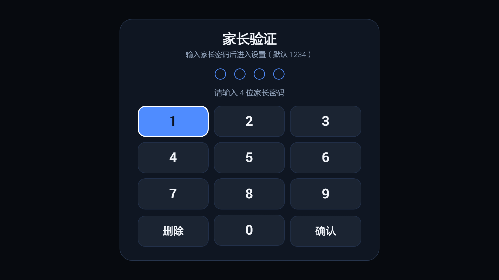
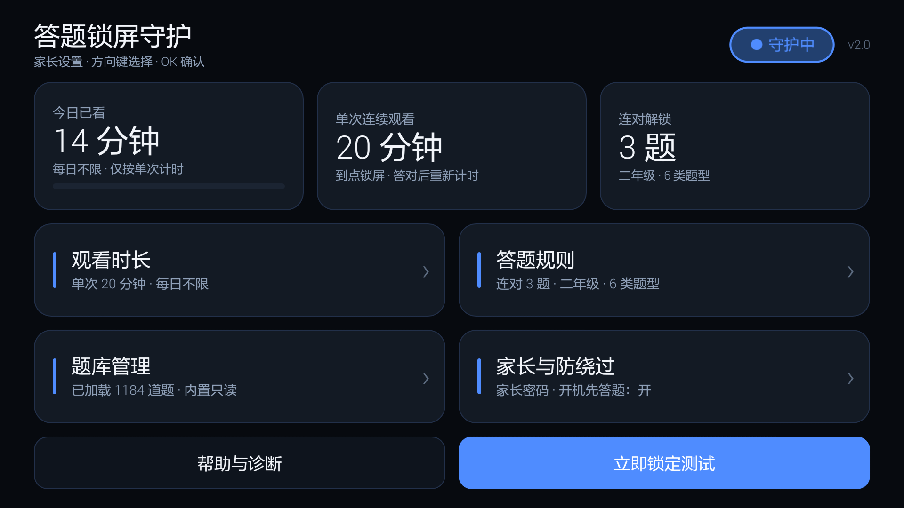
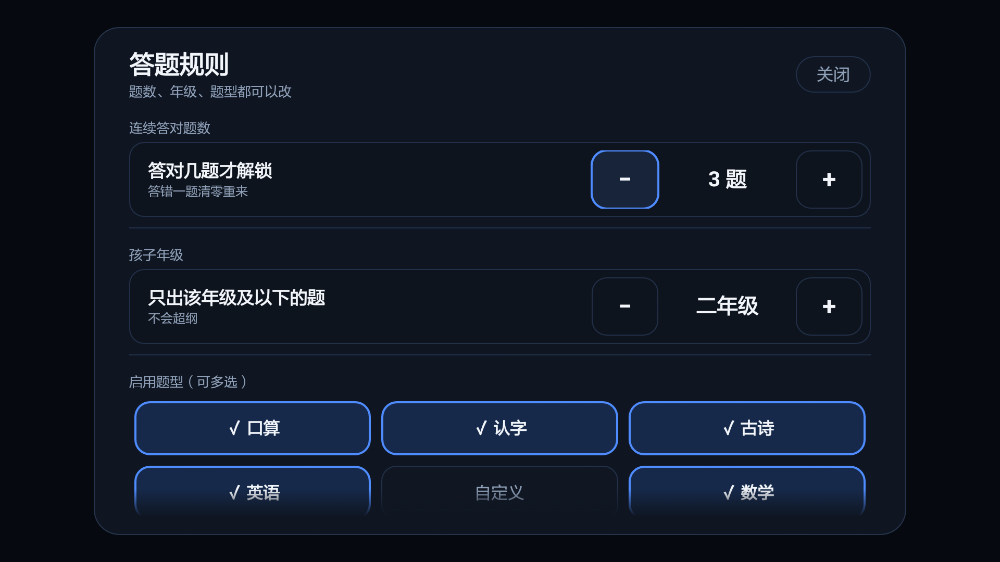
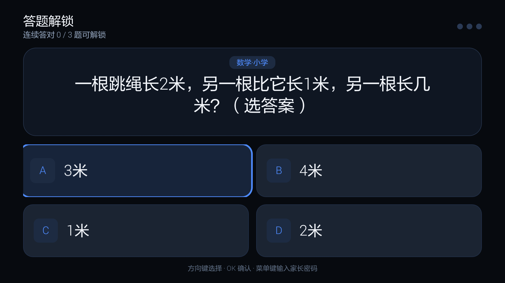
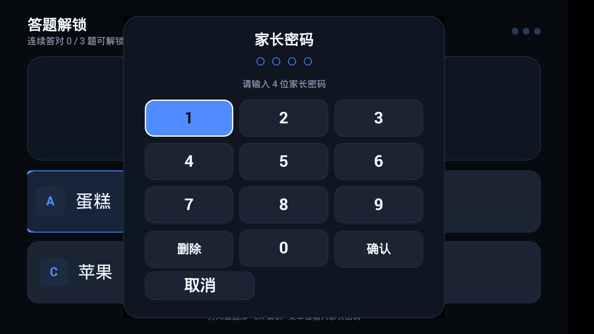

txhlock 答题锁屏 · 电视使用指南
给家长看的图文操作说明 —— 孩子看一段时间电视，必须先答对题才能继续看。
v2.0versionCode 40更新日期 2026-11-05 · 适用 Android 4.3 及以上电视（小米电视 2 实机验证）
v2.0 改了什么
| 变化 | 说明 |
|---|---|
| 卡片式界面 | 家长设置从“一条长列表”改成一屏放完的卡片仪表盘：上面三张数据卡（今日已看 / 单次时长 / 连对解锁），下面四张设置卡，底部两个按钮。左右对称、间距统一、遥控器选中会放大并出现蓝色描边 |
| 弹层式设置 | 点任意卡片，从中间弹出该页设置，改完按返回键关闭，焦点自动回到刚才那张卡 —— 不需要再滚一长串列表 |
| 锁屏页重做 | 顶部进度圆点 + 中间题目卡片 + 下面 2×2 四个大选项；题目/选项过长自动缩小字号，不再裁字 |
| Android 4.3 全兼容 | 修掉了 4.3 上会退化/崩溃的主题与系统库问题；4K 电视按屏幕宽度自动等比放大，不会缩成一小块 |
| 一句话自动安装 | 新增一键安装器：自动找 adb、扫描局域网找电视、安装、开无障碍、保持常亮；豆包 Agent 一句话即可全自动完成 |
| 逻辑修复 | 每日上限耗尽时答对不再“假解锁”；返回键双保险；家长验证 8 分钟内免重复输入；权限页不再每次启动强跳 |
| 主页键状态如实显示 | 真收到并吞掉过主页键才显示「已物理拦截」；部分小米固件不派发 HOME 事件时显示「秒级抢回」，并按 0.8 秒节奏抢回 |
一、安装与升级
方式一：一键安装器（推荐）
- 把交付目录里的 安装器 文件夹拷到电脑（和电视连同一个路由器/WiFi）。
- 双击 一键安装.bat。它会自动：找 adb → 扫描局域网找电视 → 安装 APK → 打开无障碍 → 设置常亮 → 启动应用。
- 如果提示找不到电视：按窗口里的 4 步在电视上打开 ADB 调试，它会自己继续等。
电视上开 ADB 的 4 步（只做一次）：
- 遥控器按「设置」→ 进「关于」。
- 选中「产品型号」，连按 5~7 次 OK，直到提示「已进入开发者模式」。
- 返回「设置」→「开发者选项」→ 打开「ADB 调试 / USB 调试」。
- 电视弹出「允许 USB 调试吗」→ 选「始终允许」→ 确定。
方式二：让豆包全自动装
电脑打开豆包电脑版 → Agent 模式，把
发给豆包的提示词.txt 整段发过去。它会自己下载安装器、找电视、装好并配置；找不到电视时一步一步告诉你遥控器点哪里。方式三：U 盘安装（不用电脑）
- 把
txhlock_v2.0.apk拷到 U 盘，插到电视。 - 电视打开文件管理器 → 找到 APK → 安装（提示未知来源时到 设置 → 安全 里允许一次）。
- 装好桌面出现 答题锁屏 图标；U 盘方式需手动到 设置 → 无障碍 打开「答题锁屏」。
升级：直接覆盖安装即可（同一调试签名），设置、家长密码、题库全部保留。
升级后必做一次：到 设置 → 无障碍 找到「答题锁屏」，把开关关掉、再打开一次。小米电视覆盖安装后会保留服务名字却不再绑定它 —— 表现就是“设置页看着已开启，主页键却能回桌面”。
二、家长设置（新界面）
打开应用，先输入家长密码（默认 1234）。键盘是应用内置的，遥控器方向键移动、OK 输入。

图1 · 家长验证：方向键选数字，选中键变蓝，输满 4 位自动校验
密码正确后进入卡片式主页：

图2 · 一屏放完：顶部守护开关 + 三张数据卡 + 四张设置卡 + 底部两个按钮
遥控器怎么用：方向键移动焦点（卡片放大 + 蓝色描边），按 OK 进入；弹层里按返回键关闭。所有改动即时保存，没有“保存”按钮。
| 卡片 | 能改什么 |
|---|---|
| 观看时长 | 单次连续观看（5~120 分钟）、每日累计上限（0=不限）、关机/待机重置阈值（0=关闭） |
| 答题规则 | 连续答对题数（1~10）、孩子年级（1~9）、13 个题型多选 |
| 题库管理 | 已加载题数、SMB 同步、重新加载、导出内置题库、删除本地题库 |
| 家长与防绕过 | 修改密码、开机先答题、无障碍保活状态、打开系统设置、还原并卸载 |
| 帮助与诊断 | 主页键拦截状态、修复步骤、遥控器操作说明、题库/守护状态 |
| 右上角「● 守护中」 | 点一下可停用/开启监控 |

图3 · 观看时长弹层：加减即保存；下面还有每日上限与关机重置

图4 · 答题规则弹层：连对题数、年级、题型（✓ 表示启用，再点取消）
「开机先答题」是什么意思
开（默认）：每次电视真正开机都先锁一次，必须答题才能看 —— 孩子靠重启电视绕不过去。
关：重启沿用重启前的状态（重启前锁着就还锁着，没锁就接着计时）。
三、孩子怎么用（看电视流程）
看满「单次连续观看」的时长，电视自动弹出全屏答题锁屏：

图5 · 锁屏页：顶部进度圆点、中间题目卡、下面 2×2 四个选项
- 方向键选答案，按 OK 确认；有数字键的遥控器也可按 1~4 直接作答。
- 答对：绿框 +「✓ 答对了」，顶部进度圆点点亮一颗。
- 答错：红框标出你选的，同时把正确项标绿并显示「✗ 正确答案是 B.xxx」，进度清零重来。
- 连对满设定题数 → 自动解锁，回到原来的画面继续看。

图6 · 家长随时可解锁：锁屏页按【菜单键】→ 输入家长密码
每日额度已用完时，孩子答题无法解锁，会提示「今日观看时间已用完，请家长输入密码」；家长输密码后可当日豁免。
四、题库（内置 958 题，装完即用）
应用已内置 小学 1~6 年级 + 初中 7~9 年级，共 958 道题 / 42 个知识段，覆盖语数英 + 物化生史地政。装完就能做题，不需要联网、不需要放任何文件。
自建题库（可选）
在电视 /sdcard/Download/txhlock/ 放 .txt，一行一题：
[科目@g年级] 段名（如
题干|答案|干扰项1;干扰项2;干扰项3
放好后在「题库管理」里点【重新加载题库】即可。
[科目@g年级] 段名（如
[chinese@g2]）题干|答案|干扰项1;干扰项2;干扰项3
放好后在「题库管理」里点【重新加载题库】即可。
内置题库只读：没有删除/覆盖入口。本地与 SMB 题库只能加题，同段落同题干自动跳过 —— 永远顶不掉内置题。
Android 4.3 的 SMB：4.3 系统较老，SMB 组件可能不可用，界面会给出提示。更稳的做法是用 U 盘把 txt 放进 /sdcard/Download/txhlock/。
五、主页键拦截：三档状态

图7 · 「帮助与诊断」页会如实显示当前状态与修复步骤
| 显示 | 意思 | 要修吗 |
|---|---|---|
| ✅ 已物理拦截 | 主页键在系统分发前被吞掉，桌面完全不出现 | 不用 |
| ⚠ 秒级抢回 | 这台电视固件不把 HOME 事件发给应用，锁屏 0.8 秒内盖回来 | 通常不用 |
| ❌ 未生效 | 无障碍服务被系统解绑了 | 要修 |
修复：「帮助与诊断」→【去修复主页键拦截】→ 在系统无障碍页把「答题锁屏」关掉再打开 → 返回看状态。
六、常见问题
- 装完提示「签名不同，不能覆盖」？电视上装过别的签名版本。为不丢设置，安装器不会自动卸载；请先在电视上卸载旧版，再重装。
- 找不到电视？确认电脑和电视同一个路由器；确认 ADB 调试已打开；也可以直接指定 IP：
一键安装.bat -TvIp 192.168.50.139。 - 监控已开启但显示“未锁定”？正常，指此刻没在锁屏，等看满时长才会锁。
- 重启电视能绕过吗？「开机先答题」开着时不能：每次真正开机都先锁一次。
- 怎么确认装的是新版？家长设置右上角显示 v2.0；系统应用信息里 versionCode 是 40。
- 4K 电视字会很小吗？不会。v2.0 会按屏幕宽度把界面等比放大到合适大小。
- 卸载后桌面会乱吗？不会。本应用不接管桌面、不改系统设置；先到无障碍关掉它，再卸载即可完全恢复。
txhlock · 答题锁屏守护 v2.0（versionCode 40）· 内置 958 道小学 + 初中多学科题库（只读）
本指南截图来自小米电视 2（Android 4.3，1920×1080）实机，仅供参考
本指南截图来自小米电视 2（Android 4.3，1920×1080）实机，仅供参考